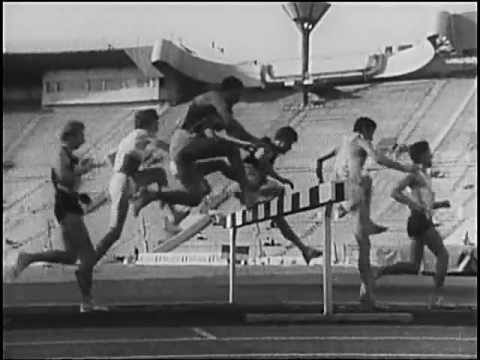

Бег с барьерами (барьерный бег): техника, дистанции, нормативы, разряды, рекорды
 База знаний Сервисы ВХОД ВХОД
Бег через барьеры: правила и техника
Бег с барьерами является одной из основных дисциплин лёгкой атлетики, направленной на развитие прыгучести, скорости, хорошей координации и гибкости человека. Техника барьерного бега за время своего существования много раз поддавалась различным изменениям, и в результате сегодня практикуется L-образное преодоление дистанции, которое является более безопасным для человеческого организма, так как допускает опрокидывание барьера.
В чём ещё особенности данного вида лёгкой атлетики, давайте разберёмся.
История дисциплины Правила соревнований Техника барьерного бега Старт и разгон Первый барьер Основная дистанция Финиш Какие упражнения помогут улучшить результаты в беге с барьерами Разрядные нормативы Для мужчин Для женщин Мировые рекордыИстория дисциплины
Первый раз о барьерном беге заговорили ещё в XIX столетии на территории королевства Великобритании. В то время, его интерпретацией были состязания пастухов из Англии соревновавшихся на скорость перепрыгивания через загоны овец.
В качестве барьеров выступали простейшие конструкции, обладающие формой «козла» для распилки дров, которые вкапывались в почву. Немного позже их сменили препятствиями, по форме напоминающие перевёрнутую букву «Т». На дистанции бега на 110 метров с барьерами Форрест Смитсон, олимпийский чемпион 1908 года В 1935 году специалисты разработали «L»-образный барьер с утяжелённым основанием, который мог переворачиваться только в тому случае, если приложить к нему силы свыше 3,6 кг, что гарантировало безопасность атлету во время осуществления прыжков.
Впервые, как самостоятельная дисциплина, бег с барьерами был отнесён в программу Олимпийских игр в 1896 году. В ней могли участвовать исключительно мужчины. Женщинам удалось представить дисциплину на ОИ только по прошествии 24 лет, в 1920 году.
Знаете ли вы? Основоположником барьерного бега в его современной интерпретации считается атлет из Америки Элвин Крэнцлайн — четырёхкратный олимпийский чемпион, являющийся на сегодняшний день единственным в мире, кто сумел стать чемпионом четыре раза за одни ОИ и в индивидуальных видах.
Правила соревнований
Главные правила данной спортдисциплины базируются на спринте, с единственной существенной разницей — наличием препятствий. Итак, правила соревнований включают:
наличие индивидуальной дорожки, по которой движется атлет; L-образные барьеры располагаются (при осмотре со стороны) через равные интервалы; препятствия устанавливаются таким образом, чтобы ножки конструкции были направлены в сторону старта. Подобное расположение позволит снизить риск возможных травм у легкоатлетов при перевороте барьера. Учитывая все правила дисциплины, спортсменам нельзя: сбивать намеренно конструкцию руками или ногами; переносить ногу со стороны или вне препятствия; двигаться под конструкцией. Важно! Количество задетых или сбитых барьеров не влияет на конечные результаты, однако, такой «нечистый» пробег существенно снижает скорость атлета, что негативно сказывается на финише. Высота барьеров для мужчин и женщин отличается и зависит от расстояния дистанции:для женщин:
60, 100 м: высота — 84 см, междубарьерное расстояние — 8,5; 400 м: высота — 76,2 см, междубарьерное расстояние — 35 м. для мужчин: 60 и 110 м: высота — 106,7 см, междубарьерное расстояние — 9,14 м; 400 м: высота — 91,4 см, междубарьерное расстояние — 35 м. Нужно отметить, что бег на 400 м осуществляется по кругу, а бег на короткие дистанции — по прямой линии, без виражей.Техника барьерного бега
Несмотря на кажущуюся простоту, техника бега с барьерами достаточно сложная, поскольку основывается на нескольких легкоатлетических дисциплинах.
Во время преодоления дистанции спортсмен проходит четыре этапа: начало и разгон, взятие первого препятствия, движение по основной дистанции и завершение забега. Давайте рассмотрим каждый из этапов подробнее.
Ознакомьтесь с техникой челночного бега , бега на короткие дистанции , бега на длинные дистанции .
Старт и разгон
Соревнования начинаются с низкого старта, который имеет ряд уникальных преимуществ: удобная для атлета позиция и быстрое начало посредством колодок. По команде «Внимание!» спортсмен изменяет свою позицию, путём поднятия таза до уровня плеч. По команде «Старт» атлет отталкивается сильным толчком от колодок и постепенно, используя широкие 3–4 шага, выравнивает и немного наклоняет вперёд корпус, голову опускает вниз.
Стартовый этап считается законченным после возведения маховой ноги, которая должна осуществить атаку препятствия. В это время толчковая нога размещается от конструкции на длине двух метров. Узнайте, как использовать тренировочную маску для бега .
Первый барьер
Бег с барьерами основывается не на прыжках через ограду, а именно на её преодолении. Во время соревнований легкоатлету следует передвигаться вперёд, а не стремиться ввысь. Особенно важно взятие первой преграды, поскольку таким образом задаётся ритм всей дистанции. Прыжок включает несколько этапов:
атака: в процессе атаки спортсмен возвышает маховую ногу, согнутую в коленном суставе, затем выпрямляет голень и направляет пятку вперёд. Параллельно о с этим происходит вынос разноимённой маховой ноги, руки. Колено толчковой ноги немного развёрнуто в сторону, при этом тело и голова размещаются на одной линии; прыжок: стартует прыжок с возвышения маховой ноги, согнутой в коленном суставе. Маховая нога двигается вниз, маховая рука отправляется назад, параллельная рука — вперёд; сход: во время приземления маховая нога становится на землю перекатом с носка на пятку, при этом расстояние от препятствия должно составлять около 130 см. Важно! При сходе очень важно не наклонять туловище вперёд, а стараться держать его ровно.Основная дистанция
Основная дистанция данной дисциплины по своей технике сродни спринтерскому бегу. Атлет во время преодоления препятствий делает три шага: первый — наиболее короткий, второй — максимально длинный и третий — подготовительный перед атакой, приблизительно на 15–20 см короче, чем второй. Главная задача спортсмена заключается в том, чтобы правильно задать ритм бега и не сбивать его, даже после падения барьера. Бег между конструкциями должен быть достаточно скоростным, мощным, но при этом пластичным. Корпус во время передвижения должен быть слегка наклонен вперёд.
Узнайте, чем полезен бег трусцой .
Финиш
После атаки последней конструкции стартует стадия финиширования, которую можно выполнять двумя методами:
броском грудью, при котором атлет на последних сантиметрах забега переводит туловище в наклонную позицию, с отведением рук назад, и таким образом старается грудью первым дотронуться до финишной ленты; боком, при котором за несколько шагов до финиша спортсмен поворачивается одним боком и при этом выносит плечо вперёд.Какие упражнения помогут улучшить результаты в беге с барьерами
Чтобы усовершенствовать результаты в барьерном беге, атлеты практикуются в других видах спорта, направленных на:
улучшение выносливости: плаванье, классический бег на длинные дистанции, пробежки под горку, челночный бег, бег с переменным ускорением и замедлением; тренировку толчков. Толчковая сила требуется во время резкого старта, быстрого разбега, ускорения на дистанции. Её хорошо можно улучшить при помощи таких упражнений, как: бег с утяжелениями, прыжки вверх и в длину, приседания с выпрыгиванием; ускорения. Стремительный старт даёт возможность задать ритм на весь забег, а также получить некую «фору» перед соперниками. Для тренировки скорости реакции рекомендуется регулярно практиковать быстрый старт. Кроме этого, легкоатлет должен постоянно упражняться в перепрыгивании барьеров, без потери времени и затрагивания перекладины. Для этого он тренирует правильный подход к конструкции, выбор позиции толчка, заброс ноги, необходимое положение туловища, правильный сброс.Важно! Решение проблемы некачественной техники барьерного бега достигается путём многочисленного повторения всех вышеизложенных, а также специально разработанных для данной дисциплины упражнений. Работа с барьерами: видео
Разрядные нормативы
Безусловно, разрядные нормативы в беге с препятствиями для мужчин, с учётом гендерного отличия, немного сложнее, нежели для женщин. Атлету присуждается тот или иной разряд при уловии выполнения определённого норматива. Ознакомьтесь с нормативами по жиму штанги лежа .
Для мужчин
Разрядные нормативы для мужчин в барьерном беге:
Вид Звания Разряды Юношеские МСМК МС КМС I II III I II III 400м (сб) — 52,5 55,0 58,5 1,02,5 1,08,0 1,11,0 — — 400м (авт) 49,50 52,74 55,24 58,74 1,02,74 1,08,24 1,11,24 — — 60 м (сб) — — 8,3 8,8 9,4 10,0 — — — 60 м (авт) 7,75 8,10 8,54 9,04 9,64 10,24 — — — 110 м (сб) — — 15,0 16,0 17,2 18,5 — — — 110 м (авт) 13,70 14,34 15,24 16,24 17,44 18,74 — — —
при этом, сб — свободный бег, авт — автохронометраж (при автохронометраже нормы повышаются на 0,15 с).
Для женщин
Разрядные нормативы женщин в барьерном беге:
Вид Звания Разряды Юношеские МСМК МС КМС I II III I II III 400м (сб) — 1,00,0 1,03,5 1,07,5 1,13,0 1,20,0 1,25,0 — — 400м (сб, авт) 56,00 1,00,24 1,03,74 1,07,74 1,13,24 1,20,24 1,25,24 — — 60 м (сб) — — 8,8 9,4 10,2 11,0 — — — 60 м (авт) 8,15 8,54 9,04 9,64 10,44 11,24 — — — 100 м (сб) — — 15,0 16,0 17,2 18,5 20,0 — — 100 м (авт) 12,95 14,24 15,24 16,24 17,44 18,74 20,24 — —
Знаете ли вы? У барьеристов высокого класса является оптимальным вариантом преодоление дистанции в 400 м за 13 шагов. Если мужчина-атлет делает больше шагов, то это является свидетельством его усталости или неправильной техники выполнения упражнения.
Мировые рекорды
Как и в любом спортивном состязании, спортсмены в барьерном беге меряются силами для того, чтобы достичь максимальных результатов — мировых рекордов.
Рекордсменами, прославившимися на весь мир, среди мужчин являются:
на 400 м — Кевинг Янг, атлет из США, который в августе 1992 году преодолел дистанцию за 46,78 с; на 110 м — Арис Меррит, американский легкоатлет, который в сентябре 2012 году стал чемпионом, пробежав дистанцию за 12,80 с. Среди представительниц прекрасного пола мировыми рекордами отметились: на 400 м — Юлия Печёнкина, российская атлетка, которая августе 2003 года пробежала расстояние за 52,34 с; на 100 м — Кендра Харрисон, американская легкоатлетка, которая в июле 2016 года преодолела дистанцию за 12,20 с. Барьерных бег представляет собой один из самых интересных и в то же время сложных видов беговой легкоатлетической программы. Он требует от спортсмена не только хорошей координации движений, мгновенной реакции и силы, но и выносливости, хорошей прыгучести, скорости. Чтобы добиться высоких результатов в данной дисциплине, необходимо долго и упорно трудиться, направив свои усилия на многократное повторение специальных упражнений. Бег Виды спорта Спорт и фитнес Легкая атлетика Виды бега
Новости по теме
Какие мышцы работают во время бега Бег на средние дистанции: техника и правила тренировок Основные виды бега и их характеристика
Читать далее
2018-09-16
Езда на велосипеде: польза и вред, обучение и правила езды
2018-09-13
Как принимать «Пентоксифиллин» в бодибилдинге?
2018-09-12
Эффективные упражнения для лечения сколиоза 1-й степени
2018-09-12
Лечебная гимнастика доктора Попова
2018-08-29
«Диабетон» в бодибилдинге: инструкция по применению, курс приёма
2018-08-28
Упражнения для укрепления мышц спины при остеохондрозе
Комментарии Последние комментарии Печень щуки: польза и вред, рецепт приготовления Иван Фёдоров
Много раз готовил печень щуки. Всегда очень просто - обвалка в муке с солью и жарка на сковороде, на ...
Продукты, содержащие клетчатку Docent StasikДа народные средства хороши как профилактика, когда уже реальная проблема надо применять артиллерию ...
Продукты, содержащие клетчатку Бехруз БотировОчистка - это, конечно, хорошо, но порядок в природе - это беспорядок. Поэтому, пожалуй, оставлю порядок ...
Витамин B1, B2 и B6 Ольга ЕвлегинаСейчас очень много хороших витаминов группы в. Единственный момент,что это именно водорастворимые витамины,соответственно ...
Минеральная вода Нафтуся Ольга ЕвлегинаПолностью согласна! Вода может здорово помочь организму,если выбрать нужную воду. Я так несколько лет ...
© 2020 Lifegid.com Конфиденциальность Использование любых материалов, размещенных на сайте, разрешается при условии ссылки на lifegid.comРедакция портала может не разделять мнение автора и не несет ответственности за авторские материалы, за достоверность и содержание рекламы